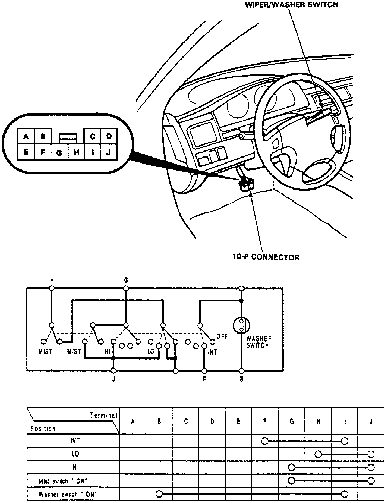

Operation CHARM
: Car repair manuals for everyone.
Home
>>
Acura
>>
1993
>>
Vigor L5-2451cc 2.5L SOHC G25A4 FI
>>
Repair and Diagnosis
>>
Sensors and Switches
>>
Sensors and Switches - Wiper and Washer Systems
>>
Wiper Switch
>>
Testing and Inspection
Wiper Switch: Testing and Inspection
Fig. 14 Washer/Wiper Switch Test:

Refer to
Fig. 14
for switch testing procedure.